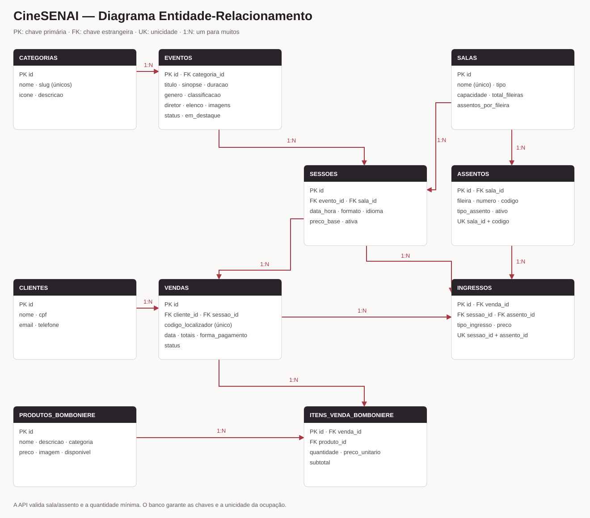

PROJETO FINAL · SENAIBoas histórias.
Um sistema completo.
CineSENAI — Bilheteria de cinema e teatro
Documentação técnica · Manual · Modelagem · Pesquisa
Python · Flask · SQLite · HTML/CSS/JavaScript
9 de novembro de 2026
Documentação técnica — CineSENAI
1. Problema e objetivo
Uma empresa de ingressos precisa organizar filmes e peças, salas, horários, poltronas e vendas. O CineSENAI atende a esse cenário em uma aplicação web local com banco relacional, catálogo, compra simulada e painel de gestão.
2. Tecnologias e justificativa
| Camada | Tecnologia | Justificativa |
| Servidor | Python 3.11+ e Flask 3 | Rotas simples, validação de dados e fácil apresentação em laboratório. |
| Interface | HTML5, Jinja2, CSS e JavaScript | Renderização pelo servidor; interações sem exigir instalação de Node.js. |
| Dados | SQLite 3 | Banco relacional persistente em arquivo, com transações e chaves estrangeiras. |
| QR | qrcode e Pillow | Geração local do QR demonstrativo do voucher. |
| Verificação | unittest e cliente de teste Flask | Exercita rotas e regras em banco temporário independente. |
3. Arquitetura
Navegador → rotas Flask em app.py → consultas parametrizadas SQLite → templates Jinja2 → navegador.
O JavaScript controla seleção de poltronas, modalidade, quantidade de combos e atualização visual dos totais. A API recalcula os preços usando o banco. Um preço enviado pelo navegador não autoriza desconto.
Arquivos: app.py (rotas e regras), database/schema.sql (DDL), database/seed.py (dados iniciais), database/catalog.py (cartazes e agenda demonstrativa), templates/ (páginas), static/ (CSS, JS, imagens), tests/ (testes), docs/ (entrega).
4. Requisitos funcionais
| ID | Requisito | Implementação |
| RF01 | Listar filmes e teatro | Catálogo com cartazes, categoria e pesquisa por título, gênero e diretor. |
| RF02 | Exibir ficha da obra | Sinopse, duração, classificação, direção, elenco e trailer de filmes. |
| RF03 | Escolher sessão | Datas, horários, sala, idioma, formato e preços. |
| RF04 | Escolher assentos | Mapa por fileira, espaços acessíveis, estados disponível/selecionado/ocupado. |
| RF05 | Inteira e meia | Modalidade individual por poltrona e meia de 50%. |
| RF06 | Adicionar produtos | Combos, pipocas, bebidas e doces; inclusão opcional. |
| RF07 | Simular pagamento | Pix, cartão ou pagamento pendente na bilheteria. |
| RF08 | Emitir voucher | Localizador, QR demonstrativo, resumo e impressão/PDF pelo navegador. |
| RF09 | Consultar ingresso | Localizador e e-mail levam ao voucher. |
| RF10 | Gerenciar catálogo | Cadastro e status de filmes/peças e cadastro, pausa e exclusão protegida de sessões. |
| RF11 | Acompanhar operação | Histórico de pedidos, totais e ocupação no painel local. |
5. Regras de negócio
• Cada pedido contém de 1 a 8 poltronas distintas de uma única sessão.
• A poltrona deve estar ativa e pertencer à sala da sessão.
• Sessão passada ou inativa não aceita compras.
• INTEIRA usa o preço da sessão; MEIA corresponde à metade.
• Cada produto deve estar disponível e ter quantidade inteira de 1 a 20; produtos duplicados são rejeitados.
• Preços de ingresso e produtos são buscados novamente no servidor.
• A compra usa BEGIN IMMEDIATE; venda, ingressos e produtos são gravados na mesma transação. Uma falha executa rollback.
• UNIQUE(sessao_id, assento_id) impede venda duplicada mesmo com requisições simultâneas.
• A interface consulta ocupação a cada 5 segundos. Selecionar no mapa não cria bloqueio temporário; a garantia acontece na confirmação.
• Pix e cartão geram APROVADO apenas no contexto simulado. BALCAO gera PENDENTE e ocupa as poltronas, sem expiração automática.
• O cadastro de sessões normaliza o datetime-local e verifica conflito na sala, incluindo 20 minutos de intervalo.
• Os novos localizadores usam 16 dígitos hexadecimais aleatórios. O QR não inclui CPF.
6. Rotas principais
| Método | Caminho | Finalidade |
| GET | / | Catálogo e busca q/categoria. |
| GET | /evento/<id> | Ficha e sessões futuras. |
| GET | /sessao/<id>/assentos | Mapa e modalidades. |
| GET/POST | /sessao/<id>/bomboniere | Produtos e resumo. |
| GET/POST | /checkout | Revisão da compra. |
| POST | /api/finalizar-compra | Validação e transação da compra. |
| GET | /api/sessao/<id>/assentos | Ocupação em JSON. |
| GET | /confirmacao/<localizador> | Voucher. |
| GET/POST | /meus-ingressos | Consulta por localizador e e-mail. |
| GET | /bomboniere e /informacoes | Catálogo de produtos e ajuda. |
| GET | /admin | Painel acadêmico local. |
7. Persistência e inicialização
Na primeira execução, o banco é criado a partir do schema e do seed. Ao iniciar, o catálogo conhecido recebe imagens locais e sessões demonstrativas para os próximos sete dias. A rotina é idempotente e respeita horários já cadastrados; não apaga vendas nem muda os horários de pedidos antigos. A agenda é renovada na inicialização, não por serviço agendado.
Um banco existente que falha na leitura não é apagado automaticamente. CINESENAI_DB permite escolher outro arquivo; CINESENAI_SECRET define a chave de sessão; PORT altera a porta. O servidor padrão escuta apenas em 127.0.0.1, sem debugger.
8. Verificação
Execute .venv\Scripts\python.exe -m unittest discover -s tests -v. A suíte usa pasta temporária e não reseta o banco de demonstração. Cobre catálogo, busca, detalhes, mapa, combos, valores, modalidades, voucher, painel, lotação, dados inválidos, sessões passadas e concorrência real com duas threads. Veja RELATORIO_DE_TESTES.md para o resultado observado.
9. Limites do projeto acadêmico
Não há gateway, envio de e-mail, autenticação de clientes, autenticação do administrador, check-in real, cancelamento, reembolso, controle de estoque ou expiração de reserva. Não usar dados pessoais reais. O localizador funciona como acesso direto ao voucher; conhecer o link permite visualizá-lo. O formulário de consulta não substitui autenticação.
O CPF é validado por formato de 11 dígitos, sem cálculo dos dígitos verificadores para permitir a demonstração. Valores monetários usam REAL com os preços demonstrativos; uma versão comercial deveria migrar para centavos inteiros ou decimais exatos. O cadastro de obras não é um sistema completo de distribuição cinematográfica. O painel é destinado à execução local no laboratório e exige autenticação, proteção CSRF, autorização, revisão de privacidade e servidor WSGI antes de qualquer exposição pública.
10. Divisão de responsabilidades — proposta para revisão
Os nomes Benito e Sandro constavam nos documentos anteriores da pasta. A matriz abaixo é uma proposta de organização; deve ser ajustada pela equipe para refletir quem realmente realizou cada parte antes da entrega.
| Responsável sugerido | Parte | Evidência a apresentar |
| Benito | Modelagem, SQLite, rotas e transações | Explicar DER, consultas e proteção contra venda duplicada. |
| Sandro | Interface, responsividade e interações | Demonstrar catálogo, mapa, combos e checkout. |
| Dupla | Requisitos, validação e apresentação | Executar testes, revisar manual e explicar decisões. |
O projeto recebeu auxílio de IA na implementação, pesquisa, revisão e documentação. Cada integrante deve compreender e revisar o material conforme as orientações do professor.
Manual de uso — CineSENAI
1. Iniciar
No Windows, abra run.bat na pasta do projeto. Aguarde o endereço http://127.0.0.1:5000 aparecer e abra-o no navegador. É necessário Python 3.11 ou mais recente. Na primeira preparação, instale as dependências com python -m pip install -r requirements.txt.
2. Encontrar uma história
Na página inicial, use Em cartaz, Cinema ou Teatro. A pesquisa aceita título, gênero ou diretor. O destaque abre O Jogo da Imitação. Cartazes levam à ficha com sinopse, duração e elenco. Filmes antigos fazem parte de uma mostra fictícia; não representam a programação real de cinemas.
3. Escolher a sessão
Na ficha, clique em uma data e escolha o horário. Confira sala, idioma, formato, inteira e meia. Datas sem sessões futuras deixam de aparecer. O trailer depende de internet.
4. Escolher poltronas e modalidade
Clique nas cadeiras desejadas (até oito). Clique novamente para retirar uma seleção. Cadeiras ocupadas não podem ser escolhidas. O mapa mostra a frente da sala ou do palco e os lugares de acessibilidade. No celular, deslize apenas a área do mapa para ver todas as cadeiras.
No resumo, escolha Inteira ou Meia-Entrada para cada lugar. O subtotal muda imediatamente. Avançar para Bomboniere só fica disponível com ao menos uma poltrona. A seleção não bloqueia o lugar para outros clientes; se houver conflito, o sistema pede outra escolha.
5. Adicionar pipoca e combos
Use + e − ao lado dos produtos. Os filtros separam combos, pipocas, bebidas e doces. Confira o total de ingressos mais produtos. Avançar para Pagamento leva os itens selecionados; Pular Bomboniere continua só com ingressos.
6. Testar o pagamento
Clique em Preencher dados fictícios para testar, ou preencha nome, CPF no formato de 11 números, telefone e e-mail fictícios. Escolha Pix, Cartão de Crédito ou Bilheteria/Balcão.
O Pix mostra um QR ilustrativo sem valor bancário. O cartão tem campos demonstrativos e os dados bancários não são enviados ao servidor. Bilheteria/Balcão gera pedido pendente. A confirmação não faz cobrança real. O botão de dados fictícios também preenche um cartão de demonstração.
7. Guardar o ingresso
Após confirmar, a página mostra localizador, sessão, poltronas, modalidades e combos. Use Imprimir / Salvar Ingresso (PDF) para abrir a impressão do navegador e escolher Salvar como PDF. O voucher não tem validade comercial.
8. Reencontrar o pedido
Clique em Meus ingressos. Digite o localizador completo (CINE-... ou TEATRO-...) e o e-mail usado. O sistema não envia e-mail: copie o código na confirmação.
9. Área de gestão
No rodapé, abra Área de gestão. Consulte vendas, ocupação, obras e sessões. É possível cadastrar obras, mudar status, cadastrar horários e pausar sessões. Sessões com ingressos são preservadas no histórico quando se solicita exclusão. A restauração de demonstração apaga o histórico: use somente em uma cópia descartável e faça backup antes.
10. Problemas comuns
| Situação | Como resolver |
| Página não abre | Mantenha o terminal do servidor aberto e confira a porta 5000. |
| Poltrona ocupada durante a compra | Volte ao mapa e escolha outro lugar. |
| Nenhuma sessão aparece | Reinicie o servidor para renovar a agenda, ou cadastre uma sessão futura na gestão. |
| Pedido não encontrado | Confira localizador e e-mail; não há envio automático por e-mail. |
| Imagem ou trailer externo indisponível | Cartazes principais são locais; trailer, fontes e alguns recursos dependem de internet. |
| Erro ao abrir banco | Preserve o arquivo cinema.db e verifique o erro no terminal; não apague o banco para corrigir. |
Diagrama Entidade-Relacionamento
O banco SQLite possui dez tabelas de domínio. Abra DER.svg para visualizar ou imprimir o desenho. A definição física completa está em database/schema.sql.
erDiagram
CATEGORIAS ||--o{ EVENTOS : classifica
EVENTOS ||--o{ SESSOES : programa
SALAS ||--o{ SESSOES : recebe
SALAS ||--o{ ASSENTOS : possui
CLIENTES ||--o{ VENDAS : realiza
SESSOES ||--o{ VENDAS : pertence
VENDAS ||--|{ INGRESSOS : contem
SESSOES ||--o{ INGRESSOS : aloca
ASSENTOS ||--o{ INGRESSOS : identifica
VENDAS ||--o{ ITENS_VENDA_BOMBONIERE : inclui
PRODUTOS_BOMBONIERE ||--o{ ITENS_VENDA_BOMBONIERE : compoe
Dicionário resumido
| Tabela | Chave primária | Chaves estrangeiras | Dados principais |
| categorias | id | — | nome e slug únicos, ícone e descrição. |
| eventos | id | categoria_id | título, sinopse, duração, gênero, classificação, imagens, status. |
| salas | id | — | nome único, tipo, capacidade, quantidade de fileiras e assentos. |
| assentos | id | sala_id | fileira, número, código, tipo e ativo; UNIQUE(sala_id,codigo). |
| sessoes | id | evento_id, sala_id | data_hora, formato, idioma, preco_base, ativa. |
| clientes | id | — | nome, CPF, e-mail e telefone; CPF não tem índice UNIQUE no schema atual. |
| vendas | id | cliente_id, sessao_id | localizador único, data, totais, forma_pagamento, status. |
| ingressos | id | venda_id, sessao_id, assento_id | tipo_ingresso, preço; UNIQUE(sessao_id,assento_id). |
| produtos_bomboniere | id | — | nome, categoria, preço, descrição, imagem, disponibilidade. |
| itens_venda_bomboniere | id | venda_id, produto_id | quantidade, preço unitário e subtotal. |
Integridade e decisões
Uma venda pertence a um cliente e a uma sessão. A aplicação exige ao menos um ingresso por venda; a cardinalidade mínima não é imposta por uma constraint SQL. Uma poltrona pode aparecer em muitos ingressos ao longo do tempo, mas apenas uma vez na mesma sessão.
PRAGMA foreign_keys = ON é ativado em cada conexão. As referências são protegidas por chaves estrangeiras. A validação de assento/sala/sessão e dos tipos é responsabilidade da aplicação; o schema não possui todos os CHECKs de negócio. Não se deve contornar a API e inserir dados arbitrários diretamente no banco.
Os preços e totais são snapshots do pedido, preservados para histórico; são uma desnormalização deliberada. A combinação de UNIQUE e BEGIN IMMEDIATE protege a ocupação concorrente. Índices aceleram buscas por categoria, evento, data, sala e sessão. Não há tabela de pagamento bancário porque não existe integração com gateway.
Diagrama visual

Pesquisa e direção de design
Pesquisa realizada em 9 de novembro de 2026. Referências examinadas por conteúdo e, para Cinemark e Cinépolis, também pelo navegador. Não houve compra nos sites pesquisados nem inspeção de checkout autenticado.
| Referência | Padrão observado | Decisão aplicada |
| [Cinemark](https://www.cinemark.com.br/) | Imagens cinematográficas grandes, cartazes, separação de filmes e snack bar. | Hero com imagem do filme, cartazes reconhecíveis, entrada própria para bomboniere. |
| [Cinépolis](https://www.cinepolis.com.br/) | Abas de programação e uma sequência de datas para sessões. | Datas selecionáveis e sessões agrupadas por dia. |
| [CineCanon — The Imitation Game](https://www.cinecanon.com/films/the-imitation-game-2014) | Referência de filme, direção e imagem do catálogo TMDB. | Conferência do banner de O Jogo da Imitação; texto da interface redigido para o projeto. |
Identidade própria
Fundo carvão #111112, vermelho #e83b45 e texto branco suave. Barlow Condensed no título do destaque e DM Sans no restante. A fotografia e os cartazes são protagonistas; bordas, sombras e movimentos são discretos. Layout com cinco cartazes por linha no desktop e dois no celular. Teatro recebe tratamento tipográfico próprio; bomboniere aparece em uma composição quente e independente.
Fluxo adotado
Catálogo → ficha/sessão → poltrona e modalidade → combo opcional → dados e pagamento simulado → voucher. O resumo acompanha as etapas e os preços são recalculados pelo servidor. A navegação não exige cadastro para a demonstração.
Materiais e atribuição
Cartazes de O Jogo da Imitação, Oppenheimer, Interestelar, Divertida Mente 2 e Duna: Parte 2 são materiais promocionais de seus titulares, obtidos pelo CDN do TMDB. O banner principal foi identificado na referência CineCanon e conferido visualmente. As URLs estão em static/images/sources.json. As imagens de pipoca e teatro vieram do Unsplash. Materiais são usados no contexto acadêmico; isso não declara licença de exploração comercial. Produtos ilustrados em SVG são desenhos do projeto. Fontes: Google Fonts; ícones: Font Awesome.
As referências orientam a organização, sem reproduzir a marca ou a interface integral das redes pesquisadas. Nomes de formatos de sala no banco são demonstrativos e não representam certificação.
Roteiro de apresentação — 8 a 10 minutos
1. Problema (1 min): uma empresa precisa vender ingressos para cinema e teatro, evitar venda duplicada e organizar sessões.
2. Tecnologias (1 min): Python/Flask no servidor; SQLite para persistência; HTML/CSS/JS na interface. Explique por que o banco não é apenas uma lista em memória.
3. Demonstração (3 min): abra O Jogo da Imitação; selecione uma data futura; escolha duas poltronas; mude uma para meia; inclua um combo; use os dados fictícios; confirme e mostre o voucher.
4. Modelagem (2 min): abra DER.svg. Mostre evento → sessão → sala → assento; depois cliente → venda → ingressos e itens de bomboniere. Explique por que a ocupação depende de sessão + assento.
5. Confiabilidade (1 min): apresente a restrição UNIQUE e a transação. Mostre que os preços são recalculados no servidor e que dois clientes disputando uma cadeira resultam em uma compra e um conflito.
6. Gestão e limites (1 min): mostre o painel, diga que pagamento é simulado e que a aplicação é local. Diferencie demonstração acadêmica de operação comercial.
7. Responsabilidades (1 min): use a matriz revisada pela equipe, reconheça ferramentas de auxílio e explique o que cada integrante aprendeu e validou.
Preparação
• Revise os nomes e a divisão de trabalho antes da entrega.
• Inicie o servidor e abra o site antes de começar a apresentação.
• Use sessão futura e poltronas ainda livres.
• Tenha o DER e o caderno HTML abertos; imprima como PDF se o professor solicitar.
• Não restaure o banco durante a apresentação. Os testes automatizados já usam outro banco.
Perguntas que a equipe deve saber responder
• Qual diferença entre evento, sessão, sala e assento?
• Como uma mesma poltrona pode ser vendida para sessões diferentes?
• O que acontece se duas pessoas confirmarem o mesmo lugar?
• Por que o servidor recalcula o preço?
• O que é chave primária, estrangeira, transação, rollback e índice único?
• Quais partes seriam necessárias antes de operar comercialmente?